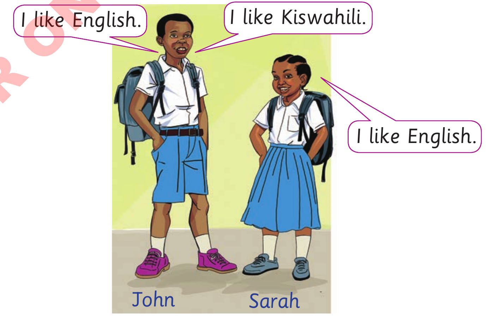

Activity 1:Listening and Oral practice/Observing and signing
(a)Use and to join sentences together.The first one has been done for you.

I like English.I like Kiswahili.I like English.John and Sarah standing in school uniform with backpacks, ready for a language practice activity.JohnSarah